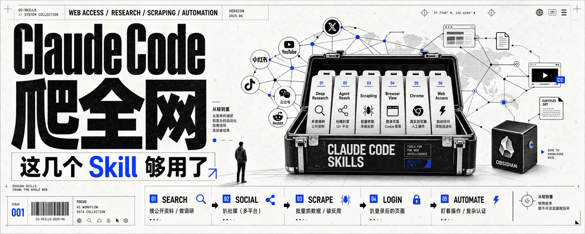

lightresearch
先调研，再决定要不要进入抓取层
Deep Research 代表的是多源公开资料的整合能力。它优先解决“先把事实摸清楚”的问题，不把浏览器当默认起点。
- 适合公开资料、背景调查、主题扫描
- 目标是把问题定义准，而不是先跑工具
这条 X 帖的核心不是“再开一个浏览器”，而是把网络访问拆成六层：Deep Research、Agent Reach、Scraping、Browser View、Chrome、Web Access。它要表达的原则很明确：从轻到重，够用就停，能不开浏览器就别开。
它把公开调研、社媒抓取、批量 scraping、登录页处理、真实浏览器操作和全自动流程，拆成不同层级的工具选择。真正有价值的是“用最轻的一层先完成任务”，而不是一上来就自动化到底。

Deep Research 代表的是多源公开资料的整合能力。它优先解决“先把事实摸清楚”的问题，不把浏览器当默认起点。
这里的意思不是“去抓所有网页”，而是面向小红书、X、抖音、YouTube、公众号、Reddit 等社媒平台做可达性处理。
Web Access 的位置在最底层：它是流程自动化和复杂认证的手段，只有在前面的层级都不够用时才上。
多源调研 / 公开资料。先在公开世界里查清楚、汇总好，再决定下一步，是最轻的一层。
社媒抓取 / 13+ 平台。它不是泛化爬虫，而是面向社交平台的可达性与数据获取层。
批量抓取 / 突破反爬。真正进入采集层时才碰反爬、批量化、结构化抓取这些问题。
登录页面 / Cookie 隔离。需要登录态时再引入受控浏览器视图，而不是把登录页当通用入口。
真实浏览器 / 人工操作。这里强调的是真人环境的操作一致性，用于需要手工介入的复杂步骤。
自动访问 / 流程自动化。它负责把前面的步骤串起来，做完整工作流，而不是替代前面所有层级。
这一步只做公开信息上的调研和定位，不要求登入、不要求自动化。它是所有后续动作的地基。
当数据散落在社媒平台时，先用 Agent Reach 处理入口差异，再决定是否需要进一步抓取。
这一步是数据规模化的入口，意味着你已经不满足于手工浏览，而是要做系统性采集。
这一层把身份与会话分离出来，避免把需要登录的页面和公开页面混在一起处理。
自动化是工作流编排，不是所有问题的第一步。只有当前面的层级都不足以解决任务，才升级到这一层。
帖子正文只是链接，真正的信息密度主要在配图里。这也是为什么做案例卡时，要把图片、结构和顺序都一起保住，而不能只摘一个标题。
Source: X status 2062115773775229318 · Echo ./ (@0xEcho99) · Swiss red-blue case card · 2026-06-04 07:54:12